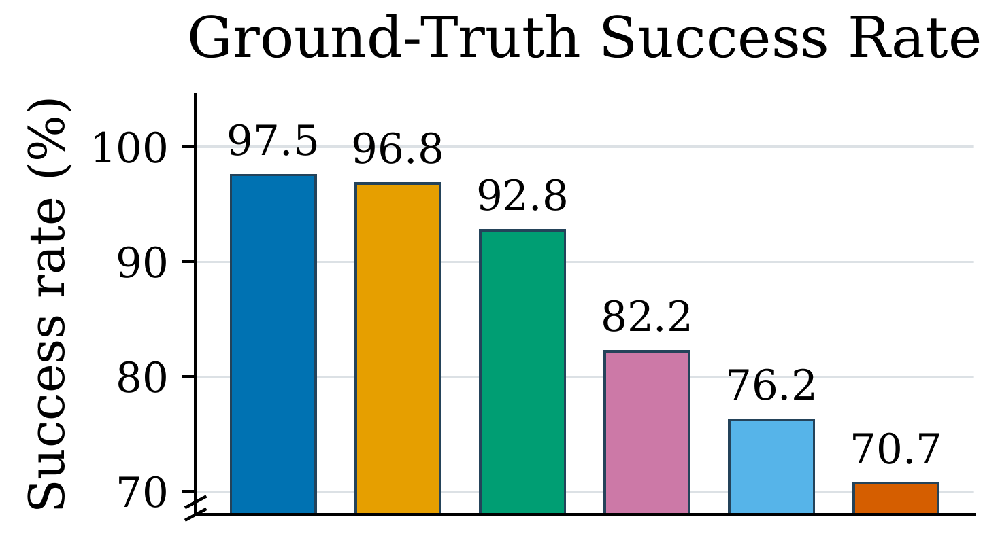
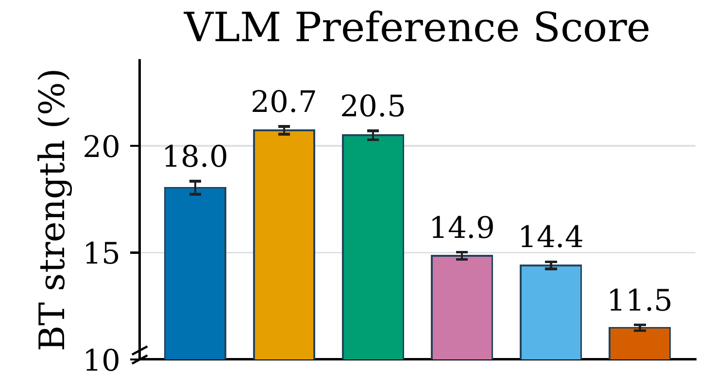
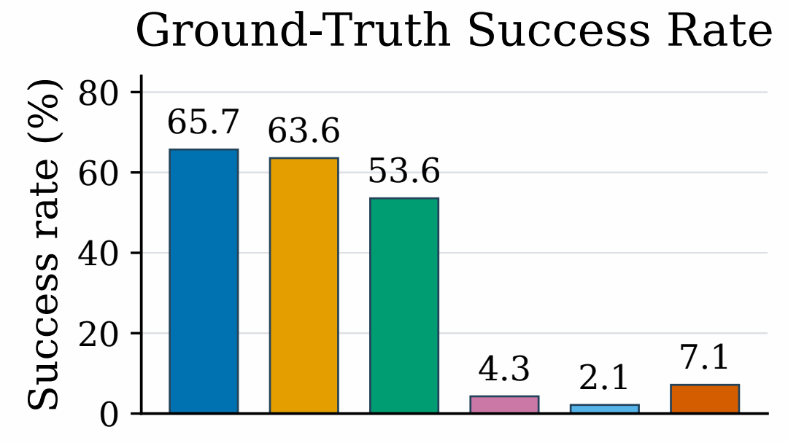
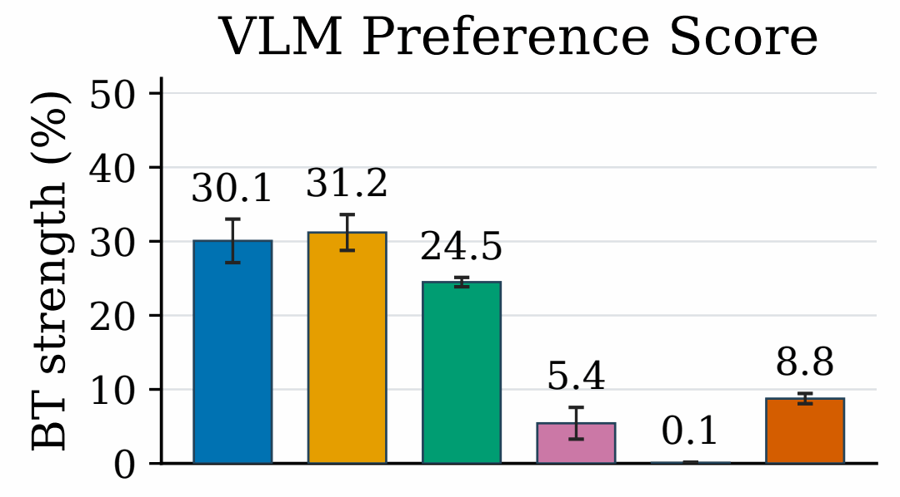

Anonymized manuscript
R2S-Eval: Robot Evaluation with Real-to-Sim Calibration via Vision-Language Models
Robot Evaluation with Real-to-Sim Calibration via Vision-Language Models
{kind=link}
Paper overview
Abstract
Evaluating robot manipulation policies is becoming increasingly important as generalist models, particularly vision-language-action (VLA) models, are deployed on physical robots. However, conventional real-world evaluation remains labor-intensive, unstable, and insufficiently informative. It requires repeated hardware trials, manual scene resets, and continuous operator monitoring, may produce different policy rankings across repeated evaluations, and primarily relies on success rate metrics that provide limited information about execution quality. In contrast, humans assess robot performance by observing and comparing complete behaviors rather than relying solely on binary success outcomes.
To this end, we propose R2S-Eval, an automated evaluation pipeline that combines real-to-sim calibration with vision-language-model-based preference evaluation. The real-to-sim component efficiently generates rollout videos aligned with the target real-world evaluation setting, thereby reducing the need for repeated physical robot trials. The VLM evaluator assesses the execution quality of rollout videos and produces pairwise preferences, which are subsequently aggregated into policy rankings.
We further introduce a validation protocol to assess whether the proposed evaluation pipeline yields trustworthy policy conclusions while mitigating the key challenges of conventional real-world evaluation. Experiments in both simulation and real-world settings demonstrate that R2S-Eval produces reliable and stable policy conclusions, achieves strong agreement with human preferences, substantially reduces evaluation-time manual effort, and reveals behavior-quality differences that are not captured by binary success labels. In general, R2S-Eval advances robot evaluation from manual success counting toward automated, statistically stable, and quality-aware evaluation of robot behavior.
01
Real-to-Sim
Seven calibrated manipulation tasks share one focused viewer. Swipe horizontally or use the pagination dots to move between tasks; the scene, video, and task label update together.
Task 01 / 07
Cover Ball with Cup
Real-to-Sim
02
Policy Rollouts
Policy rollouts expose complete execution behavior in the calibrated evaluation environments. Browse the same seven tasks to inspect a representative rollout; final policy clips will replace the current video placeholders.
Task 01 / 07
Cover Ball with Cup
Policy rollout
03
Evaluation Results
We compare six VLA policies in both the LIBERO simulation benchmark and our calibrated Real-to-Sim setting. Ground-truth task success and VLM preference scores provide complementary views of policy capability and behavioral quality.
Simulation benchmark
LIBERO
Forty language-conditioned manipulation tasks across four suites test spatial reasoning, object interaction, goal completion, and long-horizon execution.
Simulation alignment. Averaged across eight VLM judges, preference scores achieve a Spearman rank correlation of 0.823, Pearson correlation of 0.924, and 82.9% agreement with human preferences.
Simulator reference
Task success
{kind=link}

Behavior preference
VLM preference score
{kind=link}

Calibrated evaluation
Real-to-Sim
Seven reconstructed real-world tasks compare physical robot outcomes with behavior observed in calibrated simulation rollouts.
Real-world alignment. Averaged across eight VLM judges, preference scores achieve a Spearman rank correlation of 0.957, Pearson correlation of 0.978, and 91.9% agreement with human preferences.
Hardware reference
Task success
{kind=link}

Behavior preference
VLM preference score
{kind=link}

VLM preference scores use the Bradley–Terry model. Human alignment is measured from 200 sampled video pairs per setting, annotated by three people and aggregated by majority vote.
04 · Citation
Cite R2S-Eval
This is a temporary citation for the anonymized manuscript. Authors and venue will be added after public release.
@misc{r2seval,
title = {{R2S-Eval}: Robot Evaluation with Real-to-Sim Calibration via Vision-Language Models},
author = {{Anonymous}},
note = {Anonymous manuscript}
}